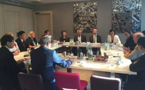
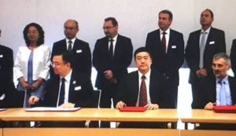
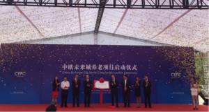
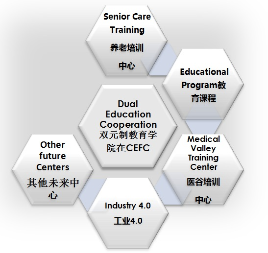

Dual Education Cooperation
- Duringthe trip of Mayor Xu Qin to Germany, the cooperationintention for higher vocational educationbetween greater Nuremberg and Shenzhen was signed. Both sites aim to send teachersas well as students to exchange know-how and start an ongoing cooperation process which shall utimatley lead to the set up of an education plateform in Shenzhen.
- November 21, 2016, China EU future city senior care facilityproject - Sino-German dual education system in Shenzhen officially launched

German Dual Education Background
The German dual system of vocation education system has atradition reaching back to the 12th century. This holistic approach involves both,an in-companytraining andthe education at vocational schools. The system allows students to already gainfirst practical training during their studies and makes the system highlyefficient asstudents enter the employment market with practical experience as well as the necessary theoreticalbackground.
Germany’s unique and specializeddual system of vocational education and training has been a major factor in Germany’seconomic success andinventiveness over the past six decades. The holistic approach, its highquality, and first-class reputation have made the German dual system itself anexport success.
